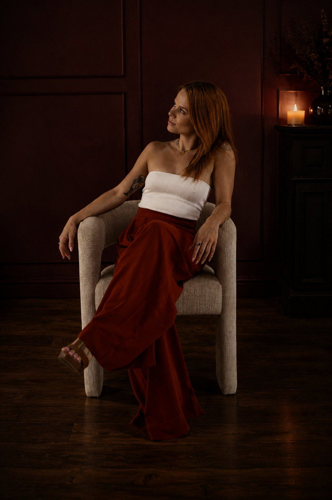
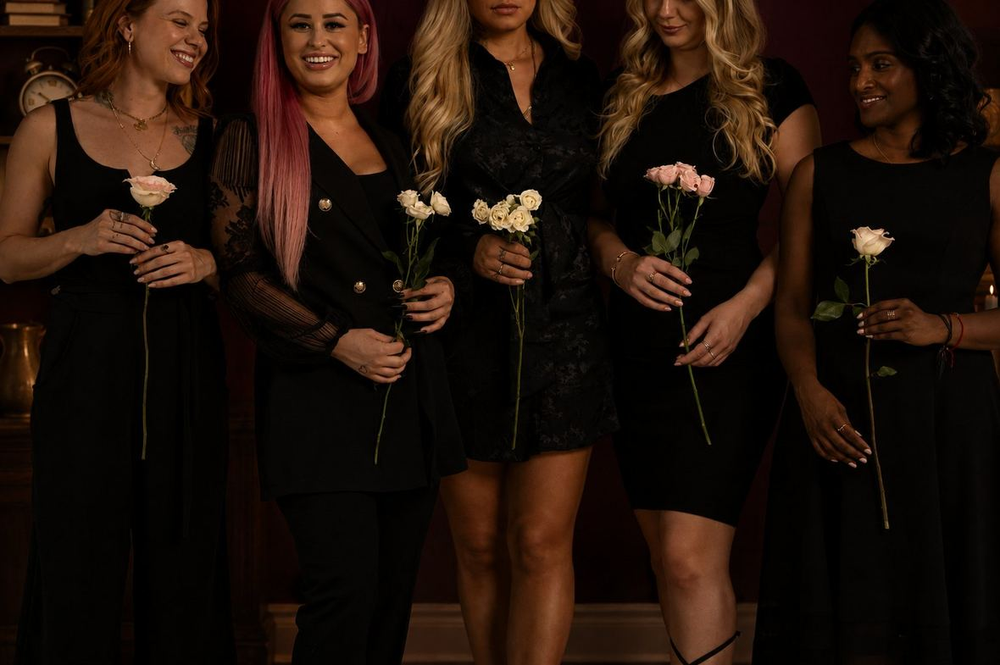
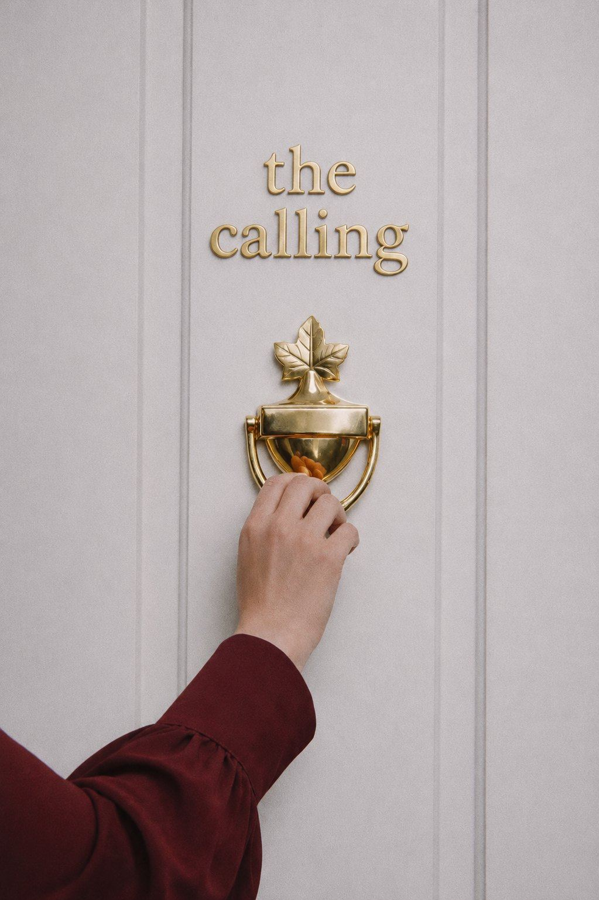
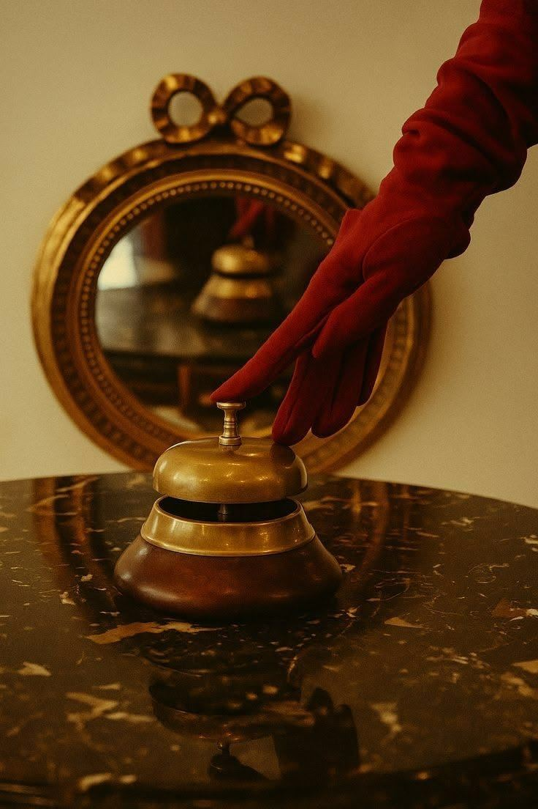
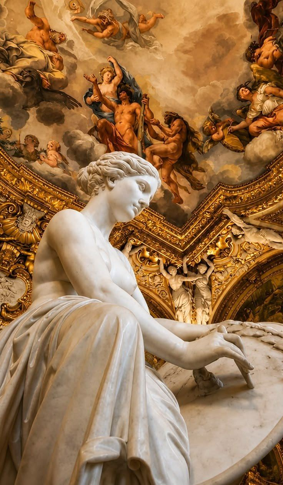
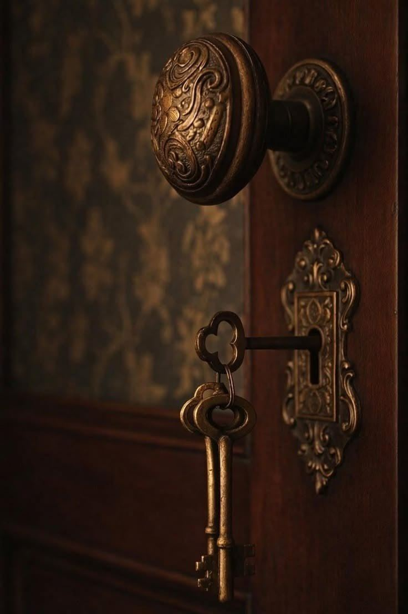
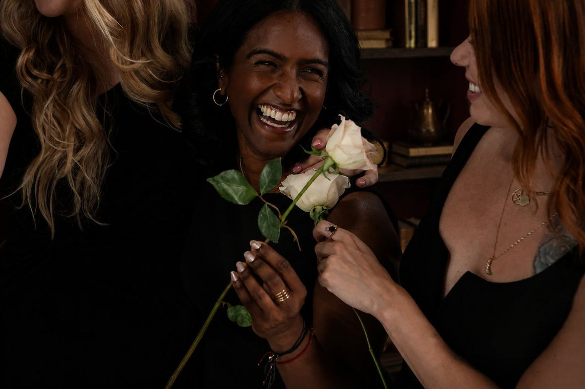
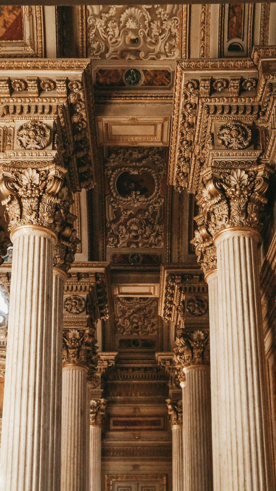
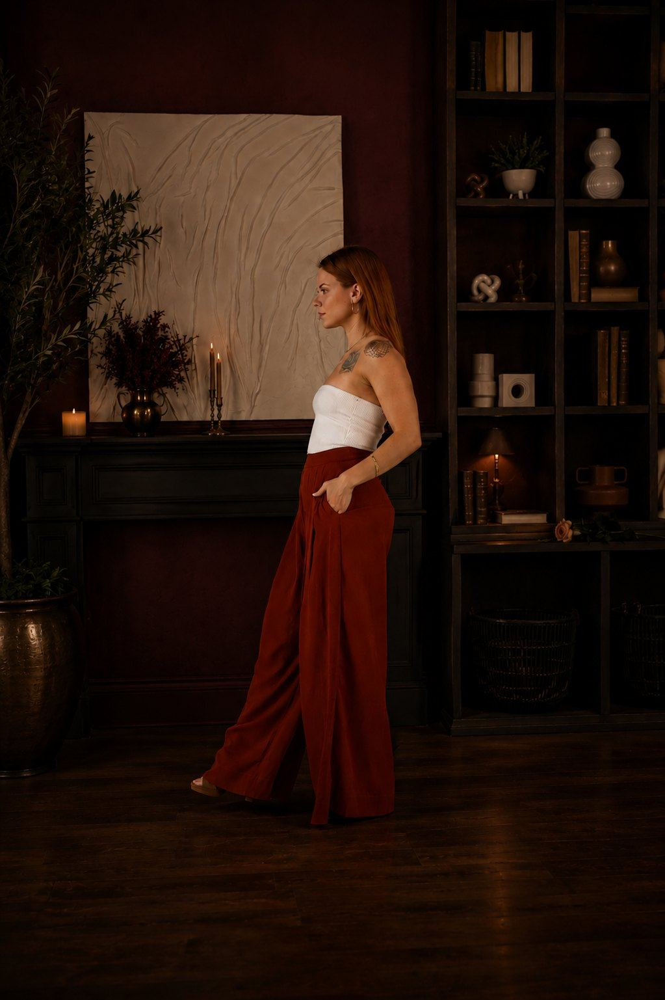

Know Yourself
Deepen your understanding of yourself, receive ancient spiritual teachings and initiation, and begin seeing yourself, your life and your potential with greater clarity.

The Calling
The question is whether you've become capable of doing it.
A 90-day initiatory journey for people ready to move beyond seeking and into deeper self-knowledge, self-mastery, spiritual training and meaningful service.
I · Recognition
“I know I'm meant to do something important with my life.”
“People have always come to me.”
“I want to help people, but I don't know what that actually looks like.”
“I have a successful career, but I don't feel like this is all I'm here for.”
“I've done years of healing and spiritual work. At some point I need to do something with it.”
“I know I'm capable of more.”
“I want training. Not another manifestation course.”
“I want to understand spirituality deeply, but I also want to be useful.”
“I don't want to waste my life.”

You're not looking for someone to rescue you. You're ready to take greater responsibility for the life you already have.
II · The Tension
You can care deeply about people. You can feel certain your life is meant to mean something. You can have gifts, intelligence, sensitivity, ambition and good intentions. And still not yet have the foundation required to carry greater responsibility well.
Calling does not equal capacity.
The gap might look like:
A calling is an invitation to develop.
III · Endless Seeking
Maybe you don't need another experience.
You've learned. You've healed. You've read the books, listened to the podcasts, taken the workshops and followed the teachers. Some of it genuinely changed you. But eventually, seeking has to lead somewhere.
Seeking should lead somewhere.
To wisdom. To mastery. To responsibility. To service.

IV · The Calling
The Calling is a 90-day initiatory journey for people who know they want their lives to matter and are ready to become more capable of contributing something meaningful. This isn't another course designed to give you more information. It is a season of development.
Across ninety days, we work on three things.
Deepen your understanding of yourself, receive ancient spiritual teachings and initiation, and begin seeing yourself, your life and your potential with greater clarity.
Develop greater stability, energetic strength, awareness, resilience, discipline and capacity in the life you are actually living.
Receive foundational and advanced spiritual training, begin developing practical tools you can use in service to others, clarify your next steps, and establish a foundation from which your calling can begin becoming something lived.
Apply for The Calling →

V · The In-Person Experience
Not another twelve-week online course.
There is extraordinary value in what can happen through a conversation, a teaching or a screen. But some things cannot be fully understood intellectually. They have to be experienced.
The Calling is built around repeated in-person experiences across the ninety-day journey, with private mentorship, practice and integration woven between them. You don't simply receive information and disappear behind a laptop for twelve weeks. You repeatedly come back into the room.
And then you return to your actual life and live it.
The Rhythm
Enter the room →Return to life →Come back different.
You receive something. You take it into your life. You practise. You discover where it holds, and where you are still challenged. Life gives you opportunities to work with what you have received.
You notice yourself differently. You receive private mentorship and guidance. And then you return to the room. You learn again. You experience again. You practise again.
Over ninety days, the work begins becoming yours.
Ninety Days
Two days of ancient teachings, rituals, spiritual tools, energetic development and initiation.
A five-part training in stress, self-regulation and inner stability, held progressively across the earlier portion of the ninety days.
Sacred Geometry · Astral Travel · Magical Beings of the Earth · Journeys of the Spirit
Crystal Lightworker training: practical tools and services you can begin using in service to others.
Life Activation, and an additional personal healing selected for your own needs.
Private guidance at the moments that matter, across the whole ninety days.
There will be teachings you can understand with your mind. And there will be rituals, initiation, meditation, healing, practices and moments that need to be experienced for yourself.
Apply for The Calling →
VI · The Transformation
“I know I'm meant for more.”
“I'm beginning to understand myself, and what has been getting in my way.”
“I'm developing the spiritual, energetic and personal foundation to hold more.”
“I have tools. I have training. I have greater capacity. I have direction. I know my next step. And I'm beginning to understand how what I have received can become useful to others.”
What you leave with
And for those called toward the healer's path, the prerequisite training needed to move into the next stage.

The Ancient Instruction
For three thousand years the instruction has not changed.
VII · The Philosophy
Know yourself so you can understand what you're here to give.
Master yourself so you can hold greater responsibility.
Heal so your wounds don't become the lens through which you serve.
Acquire wisdom so you can use it.
Purpose begins with the question: what can I contribute with the life I've been given?
VIII · The Shape of the Journey
A 90-day initiatory journey
Heal → Initiate → Expand → Train
Take the training into real life
Practise → Apply → Serve
A final in-person integration gathering
Reflect → Integrate → Continue
Ongoing monthly initiate calls and continued spiritual guidance
IX · The Four Movements
The four movements inside the ninety days.
Before anything is built, the ground is levelled. This movement clears what has been quietly running you, and begins the personal recalibration the rest of the journey rests on.
Your capacity to serve others will never sustainably exceed your capacity to govern yourself.
The central threshold of The Calling. Through the two-day Empower Thyself training you receive foundational Mystery School teachings, rituals and practical tools, culminating in initiation into the lineage.
You are not only learning more. You are building the capacity to hold more.
Four Spiritual Foundations trainings within the tradition, designed to expand awareness, deepen spiritual understanding and develop practical skill.
Each training is described in full further down this page.
A separate day of Advanced Sacred Geometry and Crystal Lightworker training, where you begin learning practical tools and services that can be offered to others.
You are no longer only receiving the work. You begin learning how to give.
From receiving →To serving.
X · What Your Ninety Days Include
A limited, high-touch cohort, because this work asks for intimacy, progression and access.
The Practicum and The Return are included in the overall Calling experience.
Personal healing & recalibration
An individual Life Activation session at the beginning of the journey. This begins the personal recalibration process and prepares you for the work ahead.
An additional healing chosen according to your individual needs and where deeper support is required.
A five-part training in stress, self-regulation and inner stability. The sessions run progressively through the earlier portion of the ninety days, so you come to understand your relationship with stress, recognise your own patterns, and build real internal steadiness.
Learn the tools → practise the tools → live the tools.
Strengthen the person who will carry the calling.
The Threshold
Through the two-day Empower Thyself training you receive foundational Mystery School teachings, rituals and practical tools designed to strengthen your energetic foundation and support a more balanced, conscious way of living.
The experience culminates in initiation into the lineage. This is where the journey moves from understanding spiritual ideas toward beginning to work with them deliberately in your own life.
Spiritual Foundations Training
Learn foundational principles of Sacred Geometry and how they are used within the tradition to create sacred spaces and establish intentionally held, energetically sealed environments.
You begin learning how to consciously work with the spaces in which you live, work, practise, create and serve.
Learn structured techniques intended to expand consciousness and awareness beyond ordinary perception, and begin exploring astral dimensions within the framework of the Mystery School tradition.
The emphasis is on the expansion of awareness, consciousness and understanding.
An exploration of the seen and unseen dimensions of life. This training invites you to deepen your awareness of the broader reality in which we live, and of the beings and intelligences described within the Mystery School teachings.
It helps you land more deeply into an understanding of both the reality we can see and the reality beyond ordinary perception.
Seven sacred meditation journeys. Each offers a different experience and key of understanding through which you can explore yourself, consciousness and spiritual reality more deeply.
This training gives you direct experiences to contemplate and integrate, rather than more spiritual concepts to intellectually understand.
Together, these Spiritual Foundations trainings establish important groundwork for the deeper practitioner path available later.

Advanced Training
Following the Spiritual Foundations training, you receive a separate day of Advanced Sacred Geometry Training. This is an important threshold in The Calling, because here you begin learning practical tools and services that can be offered to others.
Learn a structured crystal healing service used within the tradition to work energetically in support of mental, emotional and physical wellbeing.
Learn to create energetic crystal grids for homes, offices, businesses and other environments. These grids are used within the tradition with the intention of supporting a space in holding greater light, flow, protection and energetic clarity.
You are introduced to further applications of Sacred Geometry that can begin forming part of your service as a light worker.
Private Mentorship
Private mentorship happens at the key thresholds of The Calling: as you begin, as you prepare for initiation, and as the teachings meet your actual life.
What is happening in your life? What do you feel called toward? What needs attention? What do you want these ninety days to address?
Support leading into Empower Thyself and initiation, and the integration that follows it.
Relationships, work, habits, mind, emotion, energy, body, time, standards and service. This is where information becomes personal.
Graduates are welcomed into ongoing monthly initiate calls, where you can keep receiving guidance, asking questions and integrating the teachings. Olivia continues to serve as a spiritual guide as you walk what comes next.
Practice & integration
A structured workbook accompanies the journey, with practices, reflection prompts, rituals and tools designed to bring the teachings out of the classroom and into everyday life.
Learn the tools → Practise the tools → Live the tools
The Calling is not designed to give you ninety days of information. It is designed to give you ninety days of application.
Apply for The Calling →
Following the Ninety Days
There comes a point when learning more is no longer the next step. You have to use what you have been given.
Following completion of The Calling, you enter a guided practicum designed to help you take the training into real life. It is an intentional period of practice, application, service, reflection and self-mastery.
You practise your tools, work with people and spaces, use your rituals, apply The Stress Reset, complete service assignments, and reflect on what serving reveals about you.
The space between the rooms is part of the training.
And Then
Following the practicum, the cohort returns for a final in-person integration gathering.
It is a place to reflect on what happened when the work entered real life: what held, what was hard, what changed, and what is now yours to do next.
The Path Continues
After the ninety-day intensive you enter The Practicum. After the practicum, the cohort returns for The Return. After that, graduates are welcomed into ongoing monthly initiate calls and continued spiritual guidance.
A clear path into further healer training
By completing the required foundational training within The Calling, those who want to continue developing as professional light workers and healers will have completed the prerequisite training needed to move into Healers Academy with the Modern Mystery School. Once those prerequisites are complete, Healers Academy is available as the next stage of training for those who choose to continue.
At Healers Academy, students go on to learn practitioner modalities including Life Activation, Aura Healing, MAX Meditation facilitation, and further healing work within the lineage.
Healers Academy is a separate training and is not included within The Calling. The Calling provides the foundational training required to access that next stage of the path.

The Cohort
You will not walk this ninety days alone.
XI · Stories
Video or photograph, with the participant's own words.
Apply for The Calling →

XII · Why an Initiatory Path
A path has sequence, structure, practice, training, teachers, progression, standards and responsibility.
Within an initiatory tradition you do not simply learn new ideas. Initiation, lineage, progressive training, ancient teachings, spiritual tools, direct experience and practice all ask something of the person receiving them.
They are asked to develop.
XIII · A Note From Olivia
I know what it is to feel that persistent sense that life is asking something more of you. And I also know how easy it is to spend years trying to understand the call without ever building a life capable of answering it.
My work isn't about giving you an identity, declaring your purpose for you, or convincing you that you're special. It's about helping you know yourself more deeply, develop greater command of yourself, receive real spiritual training and become more useful with what you've been given.
I teach within an initiatory tradition because I believe deeply in paths that have structure, progression, standards and responsibility. And I created The Calling because there are people standing at a very specific threshold: no longer content simply to seek, not yet certain how to serve.
If that's where you are, I'd be honoured to meet you there.
Guide · Teacher · Healer
Certified by the Modern Mystery School
Lineage of King Salomon

XIV · Discernment
The Scale of It
The Calling includes:
XV · Questions
The core Calling journey takes place across 90 days. Following completion, participants enter a guided practicum and then return for a final in-person integration gathering.
Participants move into The Practicum, then return for a final integration gathering. Afterward, ongoing monthly initiate calls and continued spiritual guidance are available.
Yes. The Practicum and The Return are included in the overall experience.
Approximately one month.
The Calling opens January 2027.
No. Most people arrive knowing only that they are here for something more. The Calling is designed to develop the self-knowledge and awareness required to begin recognising your own direction, rather than to have someone declare a purpose for you.
No. The Calling does not require anyone to become a healer. Service may eventually express itself through healing, leadership, business, teaching, creativity, family, community, entrepreneurship, or something entirely different. For those who do feel drawn toward the healer's path, the foundational training received here is the prerequisite for continuing.
No previous training is required. Many participants have explored personal development or spirituality for years; others are earlier in the journey. What matters more is readiness to take responsibility and to work.
That is often exactly who The Calling is for. Many people arrive having read, healed and studied for years, and are ready for something with sequence, training and progression rather than another experience to add to the collection. The ninety days are structured to turn what you have already gathered into capacity.
Life Activation is a one-to-one session within the Modern Mystery School tradition, and is one of the first personal experiences included in The Calling. Within this programme it is used as part of the initial recalibration process and as preparation for the training that follows.
It is intended to support greater alignment, energetic vitality, awareness and connection to your own potential. The session is received individually, before the deeper initiatory work begins.
Empower Thyself is a two-day foundational Mystery School training and a central threshold within The Calling. Participants receive ancient teachings, rituals and practical spiritual tools designed to help strengthen their energetic foundation, support greater emotional and energetic balance, and work more consciously with their own energy.
The tools are intended to support greater flow and alignment, build energetic strength and expand your capacity and ability to hold greater light. The training culminates in initiation into the lineage, and establishes an important foundation for the deeper spiritual training that follows.
A five-part training in stress, self-regulation and inner stability. The sessions run progressively through the earlier portion of the ninety days, rather than once a month, so the tools are learned, practised and then lived while the rest of the training is underway.
Sacred Geometry, Astral Travel, Magical Beings of the Earth, and Journeys of the Spirit. Together they expand awareness, deepen spiritual understanding and develop practical skills within the tradition. Each is described in full further up this page.
A separate day of training that follows the Spiritual Foundations. It is the threshold where you move from primarily receiving the work toward learning practical tools and services that can be offered to others as a Crystal Lightworker: crystal healings, crystal grids for homes and other environments, and further Sacred Geometry applications.
You will have begun learning practical services through Advanced Sacred Geometry training, and The Practicum is where you actually put them to use. What you choose to offer, and how, is something the mentorship helps you think through.
No. The Calling gives you foundational training, initiation and the beginning of practical service. Practitioner certification comes through Healers Academy, which is the next stage of the path.
Healers Academy is the next level of practitioner training within the Modern Mystery School, for those who want to continue developing as healers and light workers. Students who have completed the required prerequisite training continue into Healers Academy, where they learn practitioner modalities including Life Activation, Aura Healing, MAX Meditation facilitation and further healing work within the lineage.
Healers Academy itself is not included within The Calling. The Calling provides the foundational prerequisite training needed to access this next stage.
Yes, once the required prerequisite training has been completed. You do not need to apply or be accepted. Once those prerequisites are complete, participants who wish to continue can simply sign up for Healers Academy as the next stage of their Mystery School training.
Healers Academy is a separate training and is not included in The Calling.
That does not automatically mean The Calling isn't appropriate for you. Your application is reviewed individually, so we can understand where you currently are on the path, what training you have already completed, and whether the overall experience is still the right next step. Anything that needs adjusting is discussed directly.
No. The Calling is built around repeated in-person experiences. Private mentorship and some integration may happen online, but direct experience is intentionally woven throughout the entire journey.
The rhythm is: enter the room → return to life → come back different. You repeatedly return in person for healing, initiation, training, practice and direct experience. Between those experiences you take what you've received back into your everyday life, practise, integrate and receive mentorship.
The Calling is not designed as another twelve-week programme you consume behind a screen. It is something you participate in and experience.
The in-person experiences include Empower Thyself and initiation, The Stress Reset, the Spiritual Foundations trainings, the Advanced Sacred Geometry day, your personal healing sessions, and The Return at the end of the practicum.
Private mentorship and integration are woven between them. This repeated rhythm of receiving, living, integrating and returning is an intentional part of The Calling.
The in-person components take place in the Toronto / Etobicoke area. Exact locations and dates are provided to participants.
The Calling is designed to be integrated into real life, but it does require meaningful participation. Across the ninety days there are scheduled in-person training days, The Stress Reset sessions, private mentorship, personal healing experiences, personal practices, reflection and workbook integration, followed by the practicum.
Expect to make consistent space for the work rather than treating it as something to complete passively in the background. The exact calendar and time commitments are provided before enrolment.
The Calling is intentionally limited to ten people per cohort. The small cohort allows the experience to remain personal, intimate and high-touch.
Because of the nature of the work, the level of in-person participation and the mentorship involved, the application process helps determine whether The Calling is aligned with where each individual currently is and what they are looking for. Only ten participants enter each cohort.
XVI · Answer the Call
Because the work is personal, high-touch and initiatory, the process begins with an application. Only ten people enter each cohort.
Tell Olivia a little about where you are, what you're reaching toward and why The Calling has caught your attention.
If it appears that the programme may be aligned, you'll be invited into a private conversation.
That conversation gives us the opportunity to explore where you are, answer your questions, discuss the full details of the experience, and discern together whether The Calling is the right next step.
The Calling opens January 2027 · Ten places per cohort
The Final Invitation
May you be able to say:
I used what I was given. I developed my potential. I loved people. I helped. I created something. I became someone I respected. I didn't sit on the sidelines of my own life.
90 Days · Healing · Initiation · Training · Self-Mastery · Service
Cross the threshold. Practise what you have received. Return different.